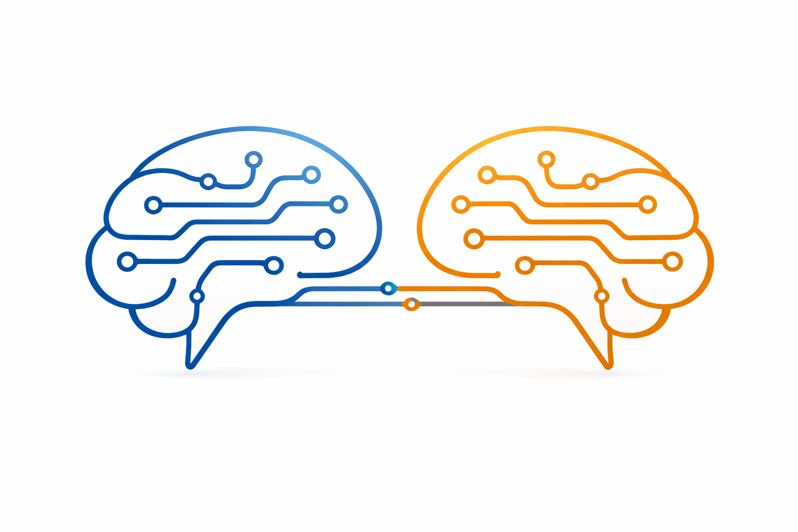
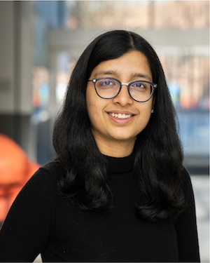
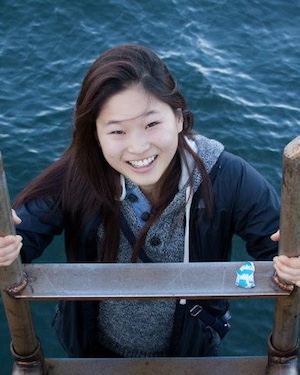

Social interactions present uniquely rich contexts for group-living species and require integration of perception, memory, and decision-making. Recent advances in neural and behavioral recording techniques have facilitated experiments with multiple interacting animals, creating opportunities for systems neuroscience to study how the brain encodes and responds to social affordances. However, computational frameworks for analyzing these interactions and their neural bases remain underdeveloped, resulting in a gap between experimental capabilities and our theoretical understanding. This workshop will bring together theorists and experimentalists to present current paradigms in social neuroscience, discuss pressing open questions, and collaboratively identify computational and technological advances necessary to answer these questions.


| Time | Speaker | Title |
|---|---|---|
| 9:10 – 9:20 | Organizers | Introduction |
| 9:20 – 10:00 | Annegret Falkner | TBD |
| 10:00 – 10:40 | Talmo Pereira | TBD |
| 10:40 – 11:00 | Coffee break | |
| 11:00 – 11:40 | Sanja Bauer-Mikulovic & Klaus Rössel | Measuring social organization and helping behavior in group-housed mice |
| 11:40 – 12:20 | Weizhe Hong | The Neuroscience of Prosocial Behavior: From Helping and Cooperation to Social AI |
| 12:20 – 15:00 | Lunch break | |
| 15:00 – 15:40 | Yusi Chen & Yuan Cheng | Neural Basis of Leader–Follower Dynamics in Cooperative Behavior |
| 15:40 – 16:20 | Jennifer Sun | New AI Approaches for Social Behavior: Opportunities and Gaps |
| 16:20 – 16:40 | Coffee break | |
| 16:40 – 17:20 | Lisa Blum-Moyses | Mechanistic theories of social foraging |
| 17:20 – 18:00 | Nick Haber | TBD |